Zusammenfassung und Prüfungshinweise
Marcel Lüthi
Departement Mathematik und Informatik

Kursziele
- Softwareentwicklung als Ingenieursdisziplin zu verstehen
- Schwierigkeiten und Limitierungen in der Softwareentwicklung zu verstehen.
- Die Fundamente und Geschichte von Software Engineering kennenzulernen
- Lernen "Modeerscheinungen" von fundamentalen Konzepten zu unterscheiden.
Hinweise zur Prüfung
- Alle in dieser Zusammenfassung diskutierten Themen sind Prüfungsrelevant
- Auch hier nicht erwähnte Aspekte können geprüft werden.
- Alle Teile haben ein ähnliches Gewicht
- Fokus auf Erklärungen, Verständnis und Zusammenhängen
- Detailwissen nicht im Fokus
- Projekt ist nicht Teil der Prüfung
- Einfache Fragen zu Tools (Git/ Github / Gradle / Travis) sind möglich
Verstehen der "Unit Test Fragen" ist gute Voraussetzung für eine genügende Note.
Software Engineering
Eigenschaften von Software
Software ist wichtig
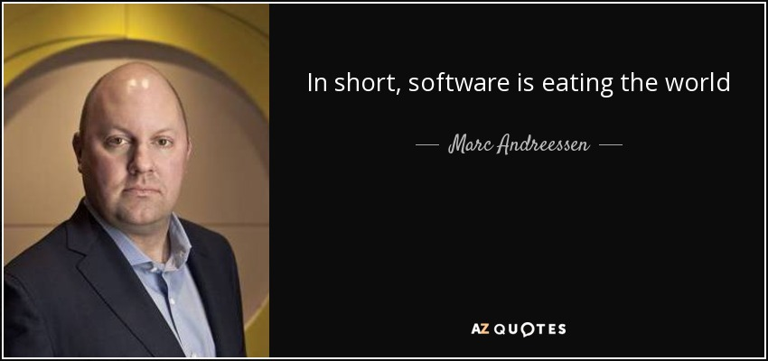
Source: Why Software is Eating the world Wall street journal
Software ist komplex
- Ganttproject : 120'000 Zeilen Code (6 Bücher)
- Firefox: 16 Millionen Zeilen Code
- Visual studio: 50 Millionen Zeilen Code
- Modernes Auto 100 Millionen Zeilen Code
- Google 2'000 Millionen Zeilen Code
Software zu Entwickeln ist schwierig

Software ist anders
- Software ist formbar
- Änderungen einfach möglich
- Software ist immateriell
- Qualität wird durch Entwicklungsprozess und nicht durch Produktionsprozess erreicht.
- Kosten entstehen in Entwicklung / Wartung
- Software folgt nicht den Naturgesetzen


Software altert
Software ist nicht das.
Sondern das!
Wartungskosten sind wichtiger Teil vom Projekt
Software altert
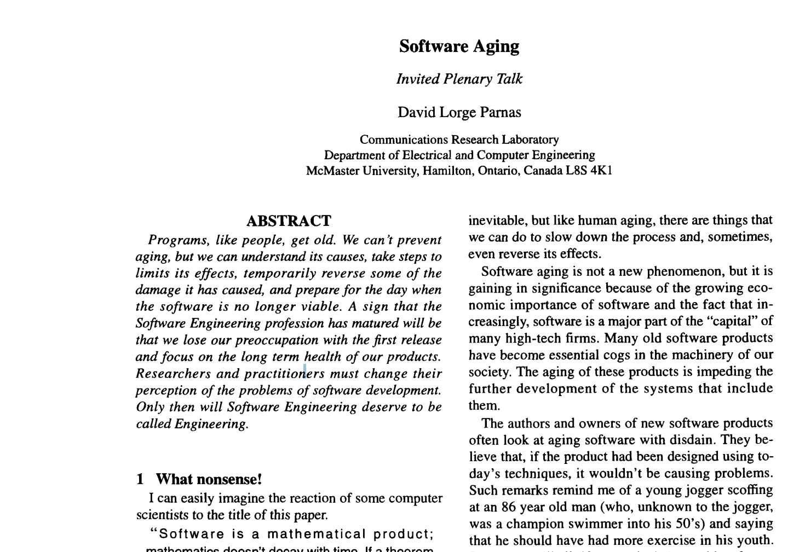Software engineering
The application of a systematic, disciplined, quantifiable approach to the development, operation, and maintanance of software.IEEE Standard Glossary of Software Engineering Terminology
The multi-person construction of multi-version software.
David Parnas, 1978
Hinweise zur Prüfung
Relevant
- Was ist Software Engineering / Weshalb brauchen wir es
- Eigenschaften von Software
- Weshalb ist Softwareentwicklung schwierig
- Zusammenhänge
- Paper: Silver Bullet, Software Aging
Weniger relevant
- Exakte Definitionen
- Genaue geschichtliche Daten
- Vollständige Aufzählung aller Qualitätsmerkmale
Softwareprozess
Softwareprozess
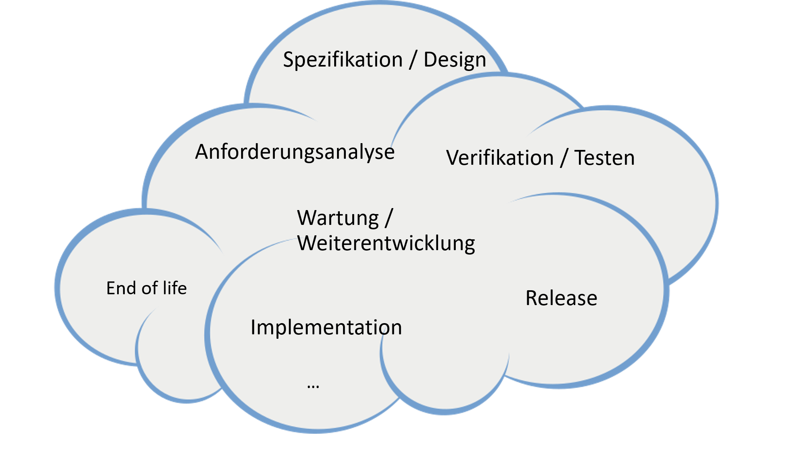Ein Softwareprozess organisiert die Aktivitäten.
- Was sollen wir als nächstes tun?
- Wie lange sollen wir das tun?
Softwareprozess als Whitebox

- Interaktion mit Benutzer in jeder Phase vom Projekt
- Eingehen auf Veränderungen möglich
- Viele Qualitätsmerkmale sind nur im Prozess ersichtlich
Zwei Extreme
Wasserfall
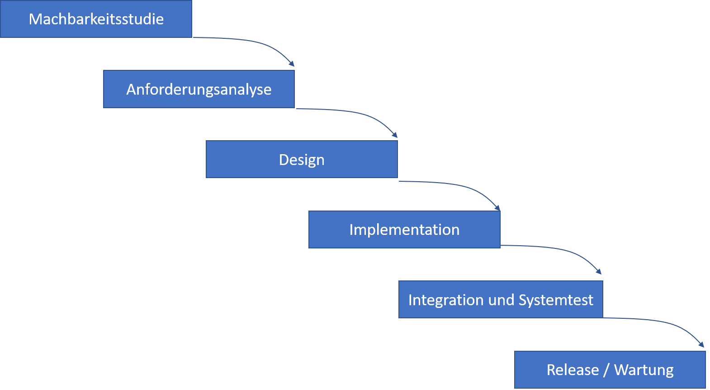- Stark strukturierte
- Rigide
- Dokumentlastig
Agil

- Gegenreaktion
- Fokus:Flexibilität
- Ziel: Weniger Regeln bei gleicher Qualität
Viele weitere Möglichkeiten
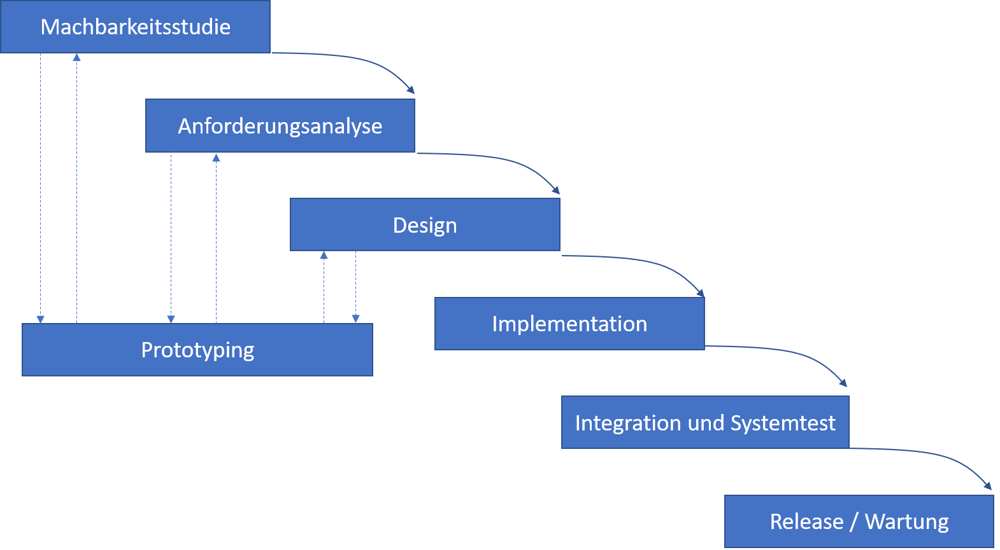
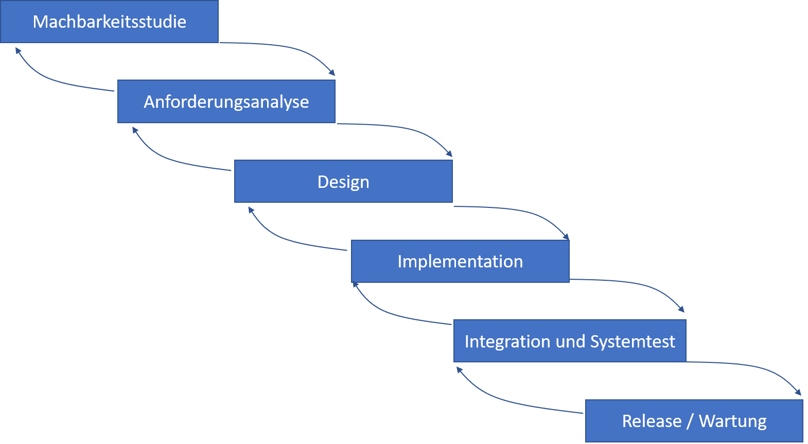
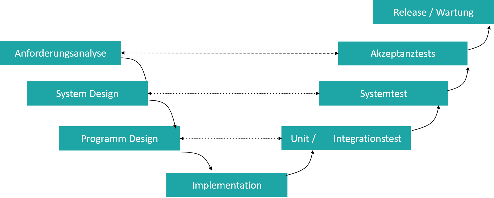
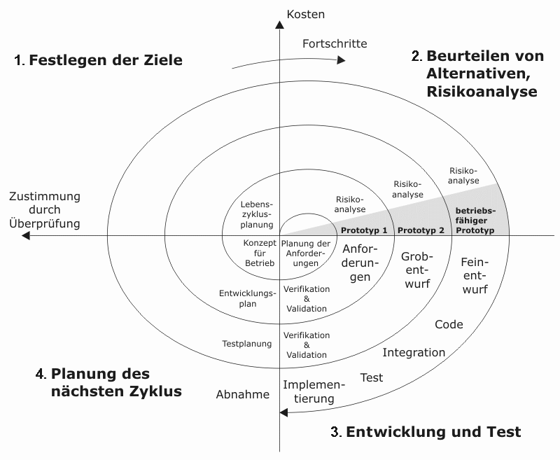
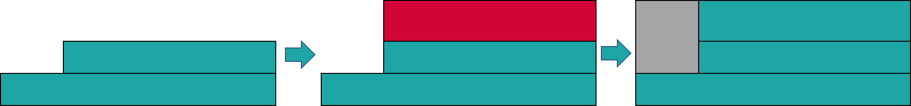
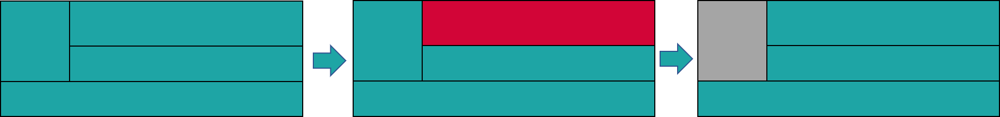
Geeigneter Prozess je nach Team / Umfeld unterschiedlich.
A rational design process

Hinweise zur Prüfung
Relevant
- Zweck von Prozessen und deren Wichtigkeit
- Stärken / Probleme der unterschiedlichen Modelle
- Paper: A rational design process
- Grundidee Agile Prozesse / Scrum
- Einsicht, das Softwareentwicklung kein linearer Prozess ist
Weniger relevant
- Kennen aller agiler Prinzipien
- Details von Spiralmodellen
- Details von Scrum
Spezifikation
Anforderungsanalyse

Anforderungsanalyse ist wichtig!
Survey von 8000 Softwareprojekten bei 350 Firmen im Jahre 1994.
31 % der Projekte sind gescheitert!
- In ca 80% der Fälle waren schlechte Anforderungen mitschuldig!
Anforderungsspezifikation
Anforderungen an Anforderungen
- Korrekt
- Eindeutig
- Vollständig
- Konsistent
- Klassifizierbar nach Wichtigkeit
- Klassifizierbar nach Stabilität
- Überpüfbar / testbar
- Verfolgbar
Sprachliche Anforderungstemplates
-
Sprachtemplates helfen syntaktische und semantische Mehrdeutigkeiten zu reduzieren.
- muss (rechtlich bindend)
- soll (dringend empfohlen)
- sollte in Zukunft (zuküftige Anorderung)
Use-cases
Beschreibung einer Systeminteraktion aus Nutzersicht.

- Hilft Anforderungen zu identifizieren und zu kommunizieren
- Interaktion soll kurz sein (Kaffeepausentest)
Klassifikation von Spezifikationsmethoden
- Informell, Semiformal, Formal
- Konstruktiv
- Verhalten wird anhand einer "abstrakten Maschine" definiert
- Deskriptiv
- Verhalten wird anhand von Eigenschaften definiert
Datenflussdiagramme

- Semi-formale, konstruktive Spezifikationsmethode
UML Sequenzdiagramme
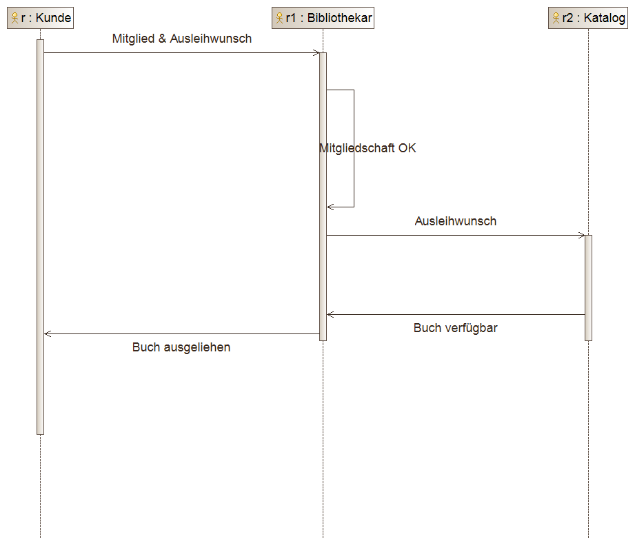- Konstruktive Spezifikationmethode
- Beschreibt Kommunikation zwischen Objekten
Endliche Automaten (Finite State Machines)
- Formal definierte, konstruktive Spezifikationsmethode
- Modelliert Zustandsübergänge
Petri Netze

- Konstruktive, formale Spezifikationsmethode
- Spezifiziert nichtdeterministische Prozesse
UML Klassendiagramme
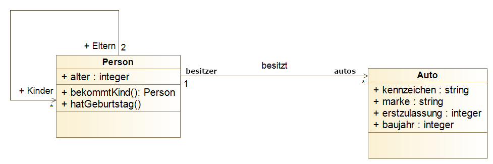- Deskriptive formal definierte Spezifikation
- Beschreibt Beziehungen zwischen Klassen/Entitäten
- Wichtigste Diagrammart in UML (und OO Entwicklung)
Logische Spezifikation
$\texttt{forall } x,y,z \; (x > y \texttt{ and } y > z \texttt{ implies } x > z)$

- Deskriptive Spezifikation
- Beschreibt Eigenschaften mittels Formeln der Aussagenlogik
Logische Spezifikation
Eigenschaft von Programm $P$ wird definiert als \[ \{\texttt{pre}(i_1, i_2, \ldots, i_n\} \\ P \\ \{\texttt{post}(o_1, o_2, \ldots, o_m, i_1, i_2, \ldots, i_n\} \\ \]- $\texttt{pre }$ ist eine Vorbedingung (precondition)
- $\texttt{post }$ ist eine Nachbedingung (postcondition)
- Bei Spezifikation von Klassen werden zusätzlich Invarianten angegeben.
Umsetzung in UML: OCL
Beispielformeln in OCL:
- context Person inv: self.alter ≥ 0
- context Person inv: self.eltern $\rightarrow$ forAll(e|e.alter>self.alter)
Hinweise zur Prüfung
Relevant
- Verstehen der Wichtigkeit / Zweck von Spezifikationen
- Kennen der wichtigen Dokumente und Spezifikationsmethoden
- Verstehen / Lesen der Spezifikationen / Diagrammen
- Einfache Klassendiagramme erstellen können
Weniger relevant
- Algebraische Spezifikationen
- Spezifikationen und Diagramme selber erstellen zu können (ausser Klassendiagramme)
Design
Ziel eines Designs
Struktur so festzulegen, dass hohe Softwarequalität erreicht werden kann.
Wichtigstes Prinzip:
- Änderungen ermöglichen
- Wahrscheinliche Änderungen sollten einfach zu implementieren sein.
Modularität

Modular:
- Lose Kopplung
- Starke Bindung

Nicht-modular
- Starke Kopplung
- Schwache Bindung
Uses Graph

- Uses Graph gibt Überblick über die Beziehung zwischen Modulen
Uses Graph als Indikator der Designqualität

Gute Abstraktion
 Modul macht zu viel
Modul macht zu viel

Zyklische Abhänigkeit
 Hierarchie
Hierarchie
Modulschnittstellen
- Schnittstelle beschreibt was Clients wissen müssen
- Abstrahiert Funktionalität
Interface

Implementation

Information Hiding
Komponenten die sich (wahrscheinlich) ändern werden sollten immer hinter einem Interface vor dem Client versteckt werden.
- Wird in OO Sprachen durch Kapselung umgesetzt.
Wichtige Beispiele von Modulen
- Prozedur / Funktion / Methode
- Abstrakte Datentypen
- Klasse / Objekt
- Pakete / (Java 9) Module
OO Design
Umsetzung von Information Hiding via Abstrakter Datentypen / Objekte
Wichtige Eigenschaften
- Objekte sind zur Laufzeit eindeutig identifiziert
- Können Nachrichten und Requests empfangen.
- Objekte können selbst wieder Objekte enthalten.
- Objektorientierter Code kann Polymorph sein.
- Implementation kann vererbt werden
Einige Wichtige OO Design Prinzipien (SOLID)
- Single Responsibility Prinzip
- Open closed Prinzip
- Liskovsches Substitutionsprinzip
- Interface Segregation
- Dependency Inversion
- Gesetz von Demeter (nicht teil von SOLID)
Designprinzipien die auf Entkopplung und Modularisierung abzielen um spätere Änderungen zu ermöglichen.
Design Patterns
Design Pattern: Bewährte Lösungsansätze für wiederkehrende Designprobleme.

- Bauteil für den Designer
- Vereinfacht Kommunikation
- Vereinfacht Lesen/Verstehen von Code
Hinweise zur Prüfung
Relevant
- Uses Beziehungen
- Interfaces und Information Hiding
- Abstrakte Datentypen / Klassen und Objekte
- Eigenschaften von OO Systemen
- OO Designprinzipien
- Design Patterns
Weniger relevant
- Optionen / Exceptions
- Textuelle und Graphische Modulbeschreibung
Verifikation
Validierung und Verifikation
Validierung:
- Bauen wir das richtige Produkt?
- Können Nutzer die festgelegten Ziele erreichen?
Verifikation:
- Bauen wir das Produkt richtig?
- Erfüllt Produkt spezifizierte Eigenschaften ?
Wichtigste Technik: Testen
Testing in the small vs Testing in the large
2 Unit Tests, 0 Integrationstests
Black vs. White box testing
White box Testing
Tests werden von Programmstruktur bgeleitet
- Kriterium: Möglichst vollständige Überdeckung vom Code
Black box Testing
Tests werden von Spezifikationen abgeleitet
- Kriterium: Möglichst gute Abdeckung der spezifizierten Anforderungen
Äquivalenzklasse und Grenzfälle
Teststrategie: 1 Test pro Äquivlanzklasse. Grenzfälle Testen.
Beispiel
if (x > y) then
S1;
else
S2;
end if
- Äquivalenzklassen
- x > y
- x <= y
- Grenzfall
- x = y
Integrationstest
Hilfkonstrukte "Stubs" und "Driver" benötigt

- Am einfachsten sind usees Hierarchien zu testen
- Bottom-up vs. Top Down Strategien möglich.
Funktionstest / Systemtest

- Testen des Ganzen Systems gegen die Funktionalen Anforderungen
- Testumgebung soll Kundenumgebung simulieren
Hinweise zur Prüfung
Relevant
- Black box - White box tests
- Überdeckungskriterien / Kontrollflussgraph
- Integrationstests / Stubs and Drivers
- Bottom up/ Top down
- Äquivalenzklassen und Grenzfälle
Weniger relevant
- Formale Definitionen von Testmenge, Fehler, etc.